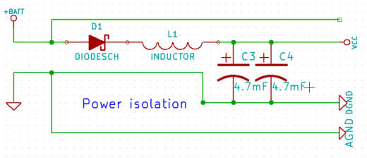
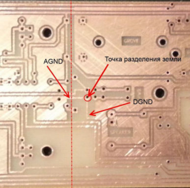
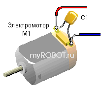
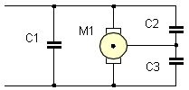

Делайте развязку питания
В момент пуска двигатели потребляют гораздо больше тока, чем в нормальном режиме. Например, для двигателей с пусковым током 1А происходит мгновенная просадка напряжения, часто достаточная для перезагрузки микроконтроллера. Чтобы побороть эту просадку необходимо осуществить развязку питания диодом Шоттки и большим конденсатором.

Линия Vcc питает всю логическую часть схемы, а силовая часть драйвера двигателя запитана от батарейки непосредственно (самая верхняя линия на рисунке). Когда напряжение питания падает, диод закрывается, и ток от конденсаторов идет только на линию Vcc, что нам и требуется. Емкость конденсатора должна быть достаточной, чтобы поддерживать питание логики на время просадки. Мне хватило двух конденсаторов по 4,7мФ. Последовательно включенная индуктивность превращает всю конструкцию в LC-фильтр.
Разделяйте землю на аналоговою и цифровую части
На предыдущем рисунке видно, что земля разделяется на две ветки, AGND и DGND. На схеме это неважно, но на практике это означает, что линия земли, обслуживающая цифровую часть, и земля двигателей должны пересекаться лишь в одной точке, максимально близко расположенной к «минусу» источника питания.

Разумеется, земляные полигоны также должны быть разделены (штрих-пунктир на рисунке).
Убедитесь в целости механических частей
Этого совета в Интернете я не встречал, но в моем случае он оказался одним из решающих. На одном из моих двигателей треснула пластиковая шестерня на валу. Это практически не сказалось на работоспособности двигателя с редуктором, поэтому заметил это я только на осциллографе. В момент попадания шестерни редуктора в трещину происходило небольшое подклинивание, что приводило к мгновенному возрастанию потребляемого тока и появлению помехи на частоте вращения двигателя.
Заземлите кварцевый резонатор
Цепь внешнего тактирования Atmega XTAL1/XTAL2 служит отличным путем для наводок. Поэтому если в вашем проекте вы используете кварцевый резонатор, велика вероятность, что в сильно шумящем окружении контроллер начнёт сходить с ума. В моем случае это выразилось в зависании, пропуске кусков программы или внезапном изменении частоты работы в большую или меньшую сторону. Чтобы победить эту проблему, мне хватило совета из п. 2., однако если и это не помогло, попробуйте заземлить кварц, припаяв на его корпус провод, идущий к цифровой земле. Будьте осторожны — кварцевый резонатор легко вывести из строя перегревом.
Экранируйте кварцевый резонатор
Обычно я делаю цельноземляную заливку на плате, но если это вам не по душе, сделайте по крайней мере небльшой земляной полигон вокруг кварца и балластных конденсаторов, как сказано в рекомендациях Atmel. Как и в предыдущем пункте, это поможет защитить линию тактирования от помех. Это же относится к случаю, если какая-либо аналоговая линия проходит параллельно логической — имеет смысл разделить их земляным полигоном.
Используйте внутренний осцилятор
Внутренний осциллятор не такой точный, как кварцевый резонатор, а так же зачастую не дает максимальную для контроллера тактовую частоту. Но если совсем ничего не выходит — можно попробовать использовать его. Первая неудачная модель моего робота стабильно работала только с внутренним осциллятором.
Электроника — наука о плохих контактах
Трижды проверьте все контакты на предмет плохой пропайки. Избегайте перемычек на линии питания логики.
Контакты бывают и хорошие, но не там, где нужно. У меня был случай, когда робот прекрасно работал, но моментально перезагружался при попытке послать что-либо через Bluetooth. Оказалось, что Reset был закорочен на линию серийного порта капелькой припоя.
Следуйте рекомендациям производителей
Почти все даташиты предлагают рекомендации по обвесу. Atmel выпускает даже отдельный документ — AVR Hardware Design Considerations.
Например, Atmega8 должна быть оснащена четырьмя конденсаторами (Reset, Vcc, ARef, AVCC), располагающимися как можно ближе к соответствующим выводам. Reset должен быть подтянут к питанию через резистор в 10KОм, основное питание (Vcc) оснащается своим отдельным LC-фильтром. Кварц и балластные конденсаторы должны располагаться как можно ближе к МК. Вообще любая микросхема должна иметь собственный отдельный конденсатор, развязывающий питание.
Поставьте конденсаторы параллельно контактам двигателей
Конденсаторы (100нФ) следует припаять непосредственно к контактам двигателей.
Для того чтобы снизить помехи от "искрящих" цепей электродвигателей, параллельно двигателям включают керамические конденсаторы 0,01...0,1 мкф. Конденсаторы располагают непосредственно на самих контактах двигателей.

Дополнительной мерой может служить шунтирование каждого контакта электродвигателя на его корпус или на "землю".

Понизьте уровень Brown-out
Brown-out — означает падение уровня напряжения. Микроконтроллеры оснащены детектором такой просадки. При ее возникновении микроконтроллер отключается. Однако уровень, при котором происходит отключение, можно регулировать. Например у Atmega8 существует три опции: детектирование отключено, срабатывание при уровне 2.7V, срабатывание при уровне 4.0V. Отключать Brown-out detection полностью я не советую, но понижение уровня срабатывания может помочь. Когда я понизил уровень до 2.7V система стала работать значительно стабильнее.